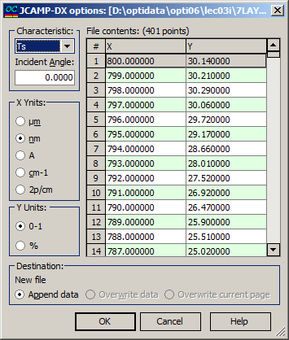

JCAMP-DX options
The JCAMP-DX format often lacks information regarding the type of measurement data and the units used. Therefore, it is essential to utilize the JCAMP-DX options dialog box to specify the type of measured characteristic, the angle of incidence, and the units for both the X- and Y-columns. To enhance user experience, the data extracted from the current file is presented on the right side of the dialog box for convenience.

The File contents box allows scrolling through the content of the selected JCAMP-DX file.
The column X shows the wavelength grid. The user should select a proper wavelength unit in the field X-Units.
The column Y displays one of the six possible spectral characteristics: Ts, Tp, Ta, Rs, Rp, Ra, BRs, BRp, BRa. The proper characteristic is chosen in the field Characteristic. Its range (0-1 or 0-100%) must be specified in the Y-units field.
Incident Angle can also be specified.
In the Destination field, you can specify the name of the data file being edited along with the destination page. Options include appending data, overwriting data in the existing file, or overwriting only the current page.
When the OK button is pressed, the content of the destination file will be replaced with the content of the JCAMP-DX file. If the number of rows in the JCAMP-DX file exceeds the number of rows in the destination page, additional destination pages will be automatically created to accommodate the extra data.